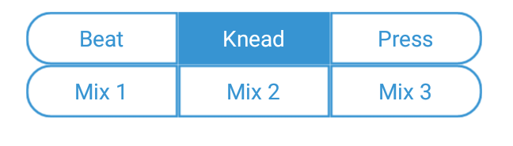

{{ title }}
Once I stumbled upon an interesting product, a massage device, which was powered solely by USB. Furthermore, it used a Micro-B plug, and was supposed to be connected to a smartphone, via OTG (imagine how much of a power drain that can be!). Sadly at the time of the writing of this article I couldn't find this product available anywhere on the internet, and their site seemed to be down as well. The only available information is their companion app on Google Play.
At first glance, this might seem your average dirt cheap chinese setup: if the hardware won't short and fry itself, then the app will steal and sell all of your available data, so I decided to mitigate at least the second risk and find out how the app works; more precisely, how it communicates with the end device. With reverese engineering such things, we have basically two options:
- Sniff and intercept all traffic, and analyse them with a tool (for example with Wireshark)
- Reverse engineer the master intelligence and driver
USB Micro female to USB male adapters were surprisingly hard to come by, so I decided on the second option. Android apps are generally easy to decompile and modify, so after using the apktool-dex2jar-jdgui trio, I had something which closely resembled to source code.
The app was partially obfuscated, but after a glance at the package names, I could narrow down where most of the driver logic would be:
com.developer.cd432rs.eMassage.devicecontrol.UsbControlService
Android USB host has a pretty well defined interface, so I could further narrow down my search knowing what transfer methods are present there.
{{ code("rev_ctrans.java", "java") }}If you take a look at the documentation, you can treat the first four magic numbers... well as magic numbers; only the first one has a bitfield-y meaning behind it. The next two parameters specify the sent data and its length, the last one is timeout, which is irrelevant in this case. To sum it up:
| Transfer type | Control |
| bmRequestType | 33 (H2D, Class, Interface) |
| bRequest | 9 |
| wValue | 0x0301 (769) |
| wIndex | 0x0100 (256) |
Also this app has most of its log messages intact, so with adb, you can log the data of each sent command, as p() is basically a hexdump method:
{{ code("rev_dump.java", "java") }}The next question is: where did this this.n come from. It's not a hard question, and the log messages trivialize it even further. Here's the init method:
{{ code("rev_init.java", "java") }}It's a really short protocol, so take a look what each byte does (converted to hex):
05 76 02 00 02 03
- 05 76: Constant magic values, I've never seen occurances in the code, where they would have changed.
- 02: Mode, the app defines 6 modes, of which the first three are valid only.  {{ code("rev_mode.java", "java") }}
- 00: Timer in minutes, not sure what effect it has, since the app already has a software timer and leaving it's value as zero works as well. {{ code("rev_timer.java", "java") }}
- 02: Strength from 0 to 12, larger values have no effect. {{ code("rev_str.java", "java") }}
- 03: Status, one means pause, two means start, three means stop. {{ code("rev_status.java", "java") }}
The rest three are mixed modes, which are updated periodically with a timer in com.developer.cd432rs.eMassage.a.a.java.
{{ code("rev_mixmode.java", "java") }}The actual update logic is as ugly as you would expect from an obfuscated snippet, I won't paste it here, but you can find it there.
This function gets called from com.developer.cd432rs.eMassage.devicecontrol.e.java.
There are also two more apps from the same developer (this and this). The first one seems like an earlier version, and maybe a little less obfuscated, as more method names were unmangled. The second is a BLE app, and I'm not sure what purpose it serves, since it's unlikely that the end device is BLE capable.
With that information, you can probably write a similar controller app for this device now.